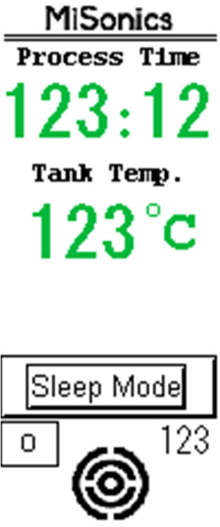
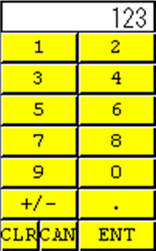
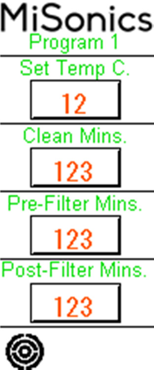
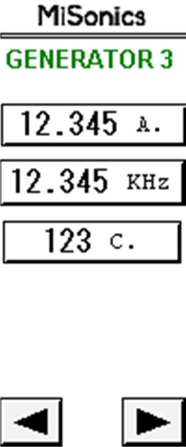
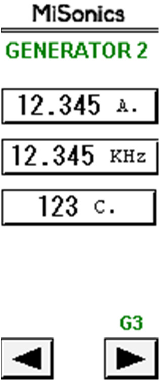
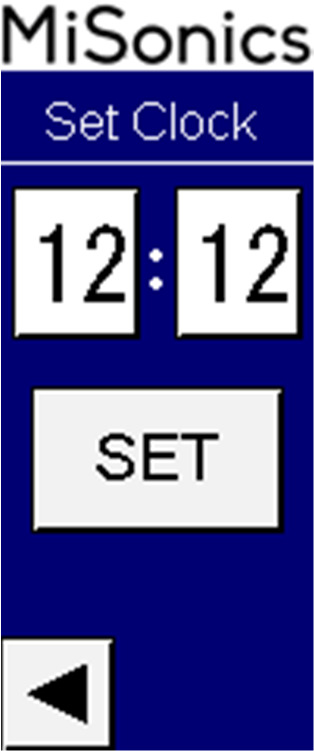
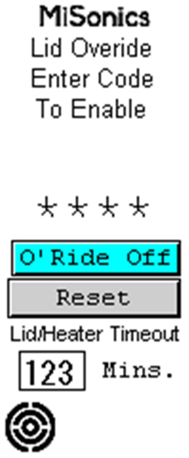

MK-390
Ultrasonic Cleaning System
A single-chamber aqueous ultrasonic cleaning system with integrated cartridge filtration — supplied and supported by Kleentek Australia.
↓ Download the full manual (PDF)Important — Read Before Operation
This manual covers the operation, control software and servicing of your Kleentek Australia MK-390 single-chamber ultrasonic cleaning system (Sections 1–7).
The instructions should be carefully studied by machine operators and service mechanics before the machine is operated. Operators should be familiar with Sections 2–4 before running a cycle; service staff should also read Sections 4–6. Keep this manual with the machine.
System Overview
The MK-390 is a single-chamber aqueous ultrasonic cleaning system with an integrated filtration unit, designed for batch cleaning of a wide range of engineered components in a water-based detergent solution. Parts are cleaned in baskets lowered into a single heated process tank, by the combined action of ultrasonic cavitation and solution turbulence, while continuous filtration keeps the bath clear. Overall machine size is approximately 1650 × 1200 × 1162 mm (L×W×H).
Baskets of components are transferred manually by the operator. For heavy parts an overhead hoist is recommended; loading and unloading is then done from the hoist hook above the tank. The machine is mounted on lockable castors and is largely self-contained — it needs only a 3-phase electrical supply and clean water to operate.
How the System Works
Effective ultrasonic cleaning depends on four factors working together — cavitation, chemistry, temperature and time. The MK-390 brings all four to bear in a single tank:
- Cavitation — three 25 kHz generators drive tube resonators in the tank base. The sound waves form and violently collapse microscopic bubbles throughout the solution, producing an intense scrubbing action that reaches every wetted surface, including blind holes and recesses a brush cannot.
- Chemistry — an alkaline detergent at 10–15% lifts and emulsifies oils, greases and particulate soils so the cavitation can carry them away.
- Temperature — a heated bath (typically 55–65 °C) markedly increases cavitation intensity and chemical activity.
- Time — each program sets the cleaning duration, so results are consistent and repeatable from batch to batch.
Gentle solution turbulence works alongside the ultrasonics to flush loosened contamination away from the parts and into the filtration circuit.
The Cleaning Cycle
In normal use the operator loads a basket, closes the lid and starts the selected program. The controller then runs the cycle automatically:
- Pre-filtration circulates and clears the bath before cleaning (time set per program).
- Ultrasonic clean runs the generators for the set cleaning time while the solution is held at temperature.
- Post-filtration polishes the bath afterwards, removing the soils just released.
- The cycle ends; the operator raises the basket, lets it drain over the tank, and unloads.
See Section 3 — System Operation for how to select, edit and start programs from the touch panel.
Filtration & Bath Management
Solution overflows the process tank into a weir (overflow) tank, from which the filtration pump draws it through a dual cartridge filter — a coarse 125 micron stage and a fine 50 micron stage — before returning it, clean, to the process tank. Removing particulate continuously keeps the bath clear, protects the finish on cleaned parts and extends solution life. The filter-housing pressure gauge shows when the cartridges are loading up and due for replacement.
Heating & Temperature Control
Two 3-phase cartridge heaters (8 kW total) bring the bath to temperature, with a PT100 RTD sensor feeding the controller for closed-loop control to the HMI set point. The tank is insulated with 9 mm double-layer nitrile foam to retain heat and reduce running cost.
Controls & Monitoring
The machine is controlled by an IDEC FT1A Touch combined PLC and touch-screen HMI. From the panel the operator selects cleaning programs, sets temperatures and cycle times, and can monitor the temperature, current and frequency of each ultrasonic generator. Protective interlocks — low bath level, weir level, lid position, over-temperature and emergency stop — stop the machine safely if a fault occurs.
Process Tank — Specification
The process tank is the heart of the machine: the single heated chamber where ultrasonic cleaning takes place. Its principal components and ratings are listed below.
| Tank material | SS 316L, 2 mm thick |
| Full tank size (L×W×H) | 800 × 700 × 800 mm |
| Tank lid | Provided (hinged SS lid, gas-spring assisted) |
| Capacity (full tank) | 390 litres (≈ 300 L at overflow) |
| Weir tank | SS 316L, 2 mm · 220 × 700 × 800 mm · 110 L capacity |
| Ultrasonic generators | 3 × ACG-25XXR (Eco type) |
| Tube resonators | 3 × 669 mm length, 25 kHz |
| Level switches | 2 × Endress+Hauser FTL31 |
| Filter housing | DOE-type cartridge filter housing, 1″ BS-10 Table E connections |
| Filters | Cartridge, 10″ long — 50 micron & 125 micron |
| Heaters | 2 × 4 kW, 3-phase, cartridge type |
| Temperature sensor | RTD PT100, 100 mm below flange, 3-wire, Ø6.5 mm (Radix) |
| Suction / drain valves | SS304 ball valves (handle type), 1″ BSPF |
| Pressure gauge | 1/4″ BSPM, 0–2 bar, red/green zone, glycerine filled |
| Filtration pump | 0.84 kW, 5 m³/h, 14.7 m head (Grundfos CM5-2-A-R-A-V AVBV) |
| Solution | Water + 10–15% alkaline solution |
| Insulation | 9 mm Nitrile foam (double layer) |
| Lid-close sensor | Magnetic switch (Banner SI-MAGB2SM) |
Preparation Before Start-Up
Commissioning and day-to-day start-up should be carried out only by personnel who are familiar with these instructions and with the relevant work-safety and accident-prevention regulations. The steps below take the machine from installation through to a degassed, heated cleaning bath that is ready for production. Read this section in full before the first start-up.
Siting & Installation
Position the machine on a firm, level floor able to carry its filled weight — the process and weir tanks together hold around 500 litres of solution, so the unit weighs several hundred kilograms when full. Lock the castors once it is located.
- Leave clearance on all sides for lid opening, basket handling and service access, and keep the ultrasonic generator cooling vents clear so warm air cannot accumulate.
- Keep the machine away from direct draughts, heat sources and heavy dust. Ambient conditions of roughly 10–40 °C and 20–80% relative humidity are recommended.
- Provide local fume extraction or good ventilation above the tank — a heated aqueous bath gives off water vapour and detergent mist.
- Make sure the supply isolator, the drain point and (where used) the overhead hoist are all within easy reach of the operating position.
Filling the Process Tank
The process tank is filled manually. Fill with clean water until the level switch is immersed; the weir (overflow) tank then holds the working reserve that the filtration pump circulates. Where possible use softened or de-mineralised water — it reduces scale on the heaters and tank, limits spotting on finished parts, and keeps the bath clearer for longer.
Preparing the Cleaning Solution
The MK-390 runs on water plus an alkaline cleaning concentrate at 10–15% by volume. Always add the concentrate to the water — never the other way around — and let the filtration pump circulate the bath for a few minutes to mix it thoroughly before heating.
- Use only the aqueous detergent specified for the machine. Do not add acidic or acid-forming additives, halogenated compounds (chlorine, fluorine, bromine or iodine), or flammable solvents — acids and halogens can pit the stainless tank and resonators, and flammables present an explosion risk.
- Check the bath concentration at least once per shift and top up the concentrate as parts and drag-out deplete it; maintain the supplier's recommended concentration and pH.
- Remember that a strongly alkaline bath (pH above about 10) can attack aluminium, zinc and some light alloys. Choose the concentration and contact time to suit the parts being cleaned.
Setting the Temperature
Set the bath temperature on the HMI; the controller then heats the process tank to that set point and maintains it. Warm solution cavitates far more effectively than cold, so cleaning performance improves markedly with temperature.
- A working set point of 55–65 °C suits most aqueous cleaning. The machine is adjustable from 10–85 °C and was factory-tested at 60 °C.
- Allow time for the bath to reach temperature before the first cycle. From cold this can take a while, given the tank volume and the 8 kW of heating.
- Do not exceed the detergent supplier's maximum temperature, and keep the lid closed during heat-up to save energy and reduce vapour.
Degassing the Bath
Fresh solution and freshly added water are saturated with dissolved air. Until that air is driven off, it cushions the imploding cavitation bubbles and noticeably reduces cleaning power.
Before the first production cycle — and again after any large top-up — run the ultrasonics (or the dedicated degas function) on the filled, heated bath for roughly 10–20 minutes with no parts loaded, until cavitation sounds even and the characteristic fine hiss is established right across the tank.
Mains Electrical Supply
The system requires a 3-phase 415 V AC, 50 Hz supply with neutral. The total connected load is approximately 16 kW, fed from a 63 A protected supply. The final connection must be made by a licensed electrician in accordance with local wiring rules.
- Provide a dedicated, lockable isolator next to the machine, with appropriate over-current and earth-leakage protection.
- Confirm correct phase rotation so the filtration pump turns the right way — a centrifugal pump run in reverse gives poor flow and can be damaged.
- Verify protective-earth continuity before energising the machine.
First Start-Up Sequence
- Confirm the tank is filled to the level switch and the cleaning solution is mixed to 10–15%.
- Close the lid and switch on at the isolator.
- Set the required temperature on the HMI and allow the bath to reach the set point.
- Degas the heated bath for 10–20 minutes with no load.
- Re-check the concentration and temperature, then load the first basket and start a cleaning program — see Section 3.
Operating the Touch-Panel Interface (MMI)
The system uses an IDEC FT1A Touch basic module (FT1A-C12RA) as a combined PLC and MMI — it serves as both display and keyboard interface. The main screen is shown automatically at power-on.

Selecting and Starting a Program
- From the main screen, press the program-selection button at the bottom to open the program-selection screen.
- Select the required program number.
- Press the home button (bottom-left) to return to the main screen. It now shows the selected program and the total process time for it.
- Press the physical Start push-button to start the process.
Editing a Program
To edit a program, press and hold its program-number button for 3 seconds to open the program settings. Select a data-entry field (for example, the set temperature) to open the numeric keypad.


| Parameter | Range |
|---|---|
| Temperature (°C) | 10 – 85 |
| Pre-filter time (minutes) | 0 – 300 |
| Clean time (minutes) | 1 – 360 |
| Post-filter time (minutes) | 0 – 300 |
Function, Status & Utility Screens
From the bottom-right selection button of the program-selection screen you reach the function screen. Holding the degas or filtration program opens its data-entry screen. Pressing INFO opens the ultrasonic status screen, where you can monitor the temperature, current and frequency of each generator.




Pressing the Sleep Mode key from the main screen opens the sleep setup, where you can set the shutdown and wake-up times.
Maintenance & Servicing
Keeping the MK-390 clean, correctly filled and properly serviced is essential for consistent cleaning performance, long equipment life and safe operation. The schedule below sets out the routine tasks; the notes that follow give more detail on the bath, filters, ultrasonics and electrical system. Carry out all work with the machine isolated unless a live check is specifically required.
Routine Maintenance Schedule
| Interval | Task |
|---|---|
| Each shift / daily | Check the bath level and top up; check solution concentration and temperature; read the filter pressure gauge; check visually for leaks and that the lid closes correctly. |
| Weekly | Skim or draw off floating oil from the weir tank; check the heater, ultrasonic and pump-motor currents; confirm even cavitation across the tank. |
| Monthly | Inspect and replace the cartridge filters as required; check the level switches and lid-close sensor; inspect cables, plugs and the gas-spring lid support. |
| Every 6 months | Blow dust from the ultrasonic generator cooling vents with dry compressed air; check terminal tightness and earth continuity; descale the heaters and tank if scale is present; carry out an ultrasonic performance (foil) test. |
| As required | Change the cleaning solution when it is spent; drain and clean out the process and weir tanks. |
Bath & Solution
Maintain the detergent concentration at 10–15% and the temperature at the set point. Skim floating oil from the weir regularly — a heavy oil load blankets the surface and reduces cavitation. Change the solution when cleaning performance falls off despite correct concentration and temperature, or when the bath is heavily loaded with fine sludge: drain it through the drain valve, clean any settled debris from the tank and weir, then refill, re-dose and degas as described in Section 2.
Cartridge Filters
The dual cartridge filters (125 micron coarse and 50 micron fine, 10″ long) are consumable items. Replace them when the filter-housing pressure climbs into the gauge's upper (red) zone, or when bath clarity and flow fall away — clogged cartridges starve the circulation pump and let particulate recirculate onto parts. Isolate the pump, relieve the pressure and drain the housing before opening it, fit fresh cartridges, and check the seals on reassembly.
Ultrasonic Performance
Confirm that cavitation is strong and even across the tank — a steady fine hiss with no dead spots. Performance can be checked objectively with the aluminium-foil test: suspend a sheet of thin foil in the bath for a short, fixed time; even, repeatable perforation and dimpling indicates healthy cavitation. Monitor each generator's current and frequency on the HMI and investigate any reading abnormally. Keep the resonator and tank radiating surfaces free of scratches and hard scale — both increase erosion and reduce output.
Heaters, Pump & Sensors
Inspect the cartridge heaters periodically and descale them if hard scale builds up — scale insulates the element, slows heat-up and shortens element life (softened or de-mineralised water greatly reduces this). Check the filtration pump for leaks, noise and correct flow, and keep the level switches and temperature sensor clean so they read reliably.
Ultrasonic Generators
The generators are air-cooled. Keep the cooling vents clear and, at six-monthly intervals, blow accumulated dust out with dry compressed air (machine isolated and cool). Make sure warm air can escape and is not allowed to build up around the unit. Do not open a generator housing — there are no operator-serviceable parts inside.
Service
If the machine no longer operates correctly, first check the supply, isolator, plugs and operating controls, and review any message shown on the HMI. Do not open sealed housings. Repairs may only be carried out by suitably trained personnel — inexpert intervention can endanger both the user and the equipment. For spare parts, refer to the Recommended Spares List and the drawings in Section 7.
Warranty
A twelve-month warranty applies from the date of purchase, provided the equipment is operated and maintained in accordance with these instructions. The warranty excludes consumables and damage caused by abrasion, wear, scale or improper handling — for example, pitting caused by acidic or halogenated additives, which must not be used.
MMI Screen Map
The MMI is organised as a set of screens reached from the main screen. The principal screens are summarised below; see Section 3 for how to navigate them.
| Group | Screens |
|---|---|
| Main & programs | Main screen · Program 1 · Program 2 · Program 3 · Program 4 |
| Functions | Function · Degas · Filtration · User Info · Lid Override |
| Ultrasonic status | US1 Status · US2 Status · US3 Status |
| Utilities | Sleep · Set Clock · Machine Info |
Machine Test Report
Single-chamber ultrasonic cleaning system · Serial No. S23CP0001-0001 · Connection diagram 4-10-B0909 · Machine size 1650 × 1200 × 1180 mm.
| Component | Address | Measured (A) | Rated (A) |
|---|---|---|---|
| Process-tank heater (×2) | H1 | 10.60 / 10.40 / 10.48 | 25 |
| Recirculation pump | M1 | 0.99 / 1.06 / 1.10 | 1.8–2.5 |
| Ultrasonic 1 | UX1 | 2.20 | 10 |
| Ultrasonic 2 | UX2 | 2.17 | 10 |
| Ultrasonic 3 | UX3 | 2.19 | 10 |
| Process tank | 20 → 60 °C |
| Cartridge filter 1 | 10″×4″, 50 micron |
| Cartridge filter 2 | 10″×4″, 125 micron |
Error Testing
The following protective functions were checked and confirmed during the factory test:
| Item | Make | Specification | Power | Supply |
|---|---|---|---|---|
| Recirculation pump (M1) | Grundfos | CM5-2-A-R-A-V-AVBV | 0.46 kW, 2820 rpm | 415 V, 50 Hz |
| Generator UX1 | — | G-MSX-25XXR | 1.5 kW, 10 A | 230 V, 50 Hz |
| Generator UX2 | — | G-MSX-25XXR | 1.5 kW, 10 A | 230 V, 50 Hz |
| Generator UX3 | — | G-MSX-25XXR | 1.5 kW, 10 A | 230 V, 50 Hz |
| Tube resonators HF1–3 | — | URT-25-48-5 (669 mm) | — | — |
Continuous running test: 25 cycles over one working day. Factory test passed.
Technical Drawings & Lists (PDF Downloads)
The machine's reference drawings and lists are provided here as separate PDFs. Click any item to open or save it.